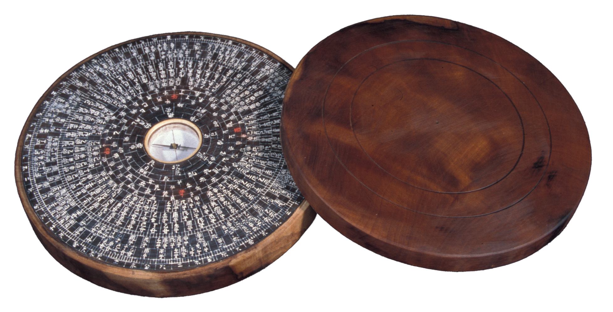

윤도장
24방위를 원으로 그려 넣은 풍수 지남침(指南針)을 제작하는 기술

제작과정
윤도의 가장 일반적인 형태인 평철은 나무를 원통형으로 깎아 모양 만들기, 중심과 층수를 정해 정간(定間)하기, 각자(刻字) 하기, 먹칠하기, 중앙원 다듬기, 옥돌 가루 칠하기, 주사(朱砂) 입히기, 자침(磁針) 만들기 등 여러 공정을 거쳐 만들어진다. 특히, 나무 표면에 작은 글씨를 새겨야 하는 각자 작업은 윤도장의 핵심 기술로 고도의 집중력이 요구되는 세밀한 공정이다.
사용재료
재료는 주로 150년 이상 된 대추나무를 사용하는데, 이는 목재 결이 곱고 단단하여 정교한 조각이 가능하기 때문이다.
특징
윤도는 중심의 지남침을 둘러싸고 24방위를 기본으로 하는 방위명들로 구성되어 있다. 거기에는 음양·오행·팔괘·십간·십이지가 들어 있다. 방위명 자체는 팔괘·십간·십이지가 조합되어 이루어져 있다.
전승자
| 보유구분 | 이름 | 성별 | 기예능 | 지역 | 인정일 |
|---|---|---|---|---|---|
| 보유자 | 김희수(金熙秀) | 남 | 윤도제작 | 전북 | 2007-09-17 |
| 명예보유자 | 김종대(金鍾垈 ) | 남 | 윤도제작 | 전북 | 1996-12-31 |
소재지
전북